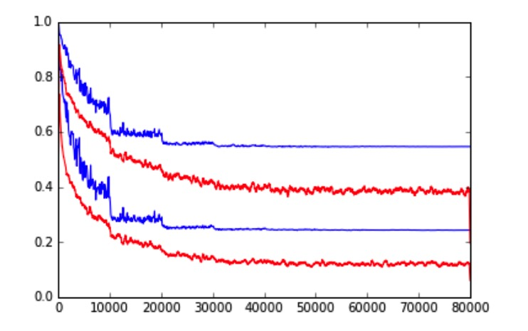
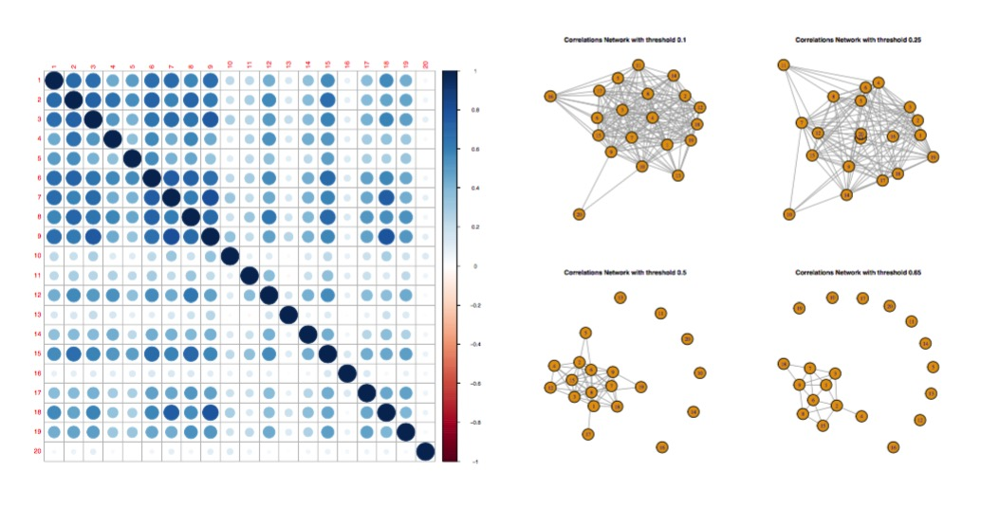
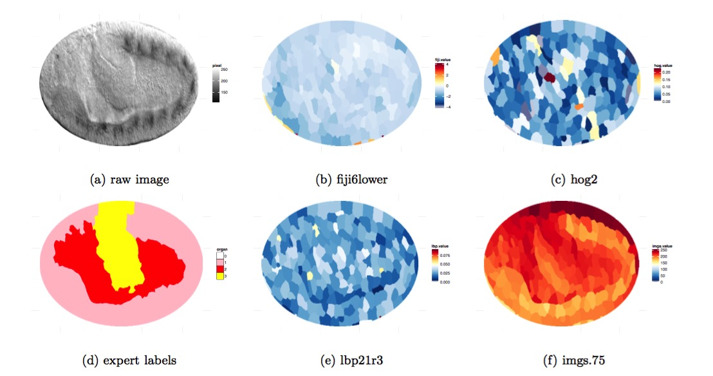
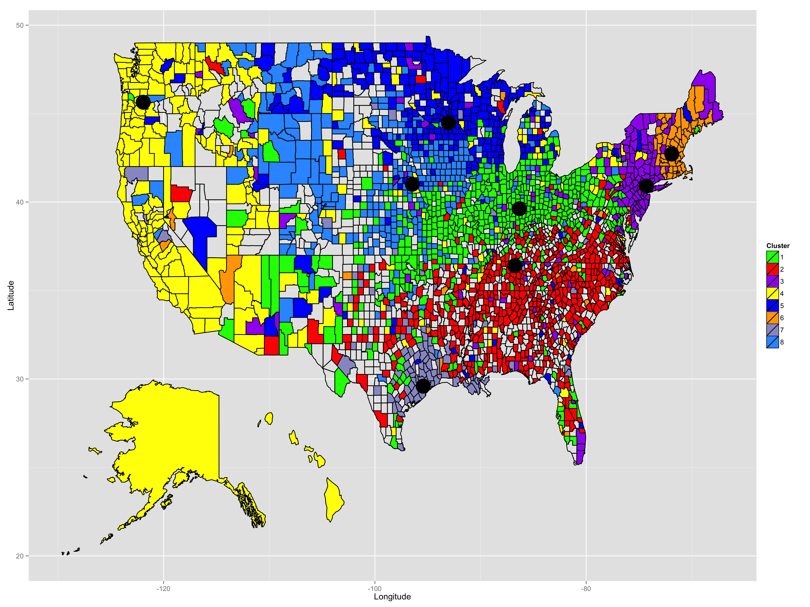

ResearchMy research mainly focuses on causal inference and machine learning. More specifically:
Other Applied ProjectsScene Recognition using Convolutional Neural Network In this project, we appled Convolutional Neural Network (CNN) for scene recognition on MIT Place dataset. We investigated GoogLeNet, VGG net and Residual Net to classify the scene images. We achieved top 3 (out of 46 teams, 71 participants) performance in the Berkeley Computer Vision course (CS280) competition with respect to the prediction accuracy. Link Prediction of Brain Responses to Visual Images on fMRI data In this project, we studied on the responses in 20 voxels located in the region of the brain responsible for visual functions. There are 120 observations and each with 10921 features (wavelets). We first applied Sure Independence Screening for dimension reduction. Then we investigated Lasso , L2-boosting , Random Forest , Tree Boosting to predict the brain responds. We also applied Knockoff filter to find the significant coefficients while controling the false discover rate. Organ Classification and Sengmentation for Drosophila Embryo Image based on Machine Learning and Conputer Vision Method. This project mainly focused on distinguish gut, yolk, and epidermal/mesodermal tissue in embryo images. We constructed features from the raw embryo image based on multiple classical computer vision method (e.g. Histogram oriented gradient feature and Local Binary Pattern) with scikit-image in python, selected features based on variable importance from Random Forest and Tree Boosting. We studied different machine learning algorithms (Random Forest, Tree boosting, Lasso, SVM) to classify and segment the organ. Discover of Subculture in US with Dialectometric Analysis using Unsupervised Learning Method. In this project, we investigated unspervised learning to the dialectometric analysis of the Harvard Dialect Survey conducted in 2003. We use Multidimensional Scaling (MDS) to visualize the relationship of the questions and answers in the survey data. Based on Term Frequency-Inverse Document Frequency (TF-IDF) model, we proposed a new distance metric and applied k-medoids model to find out and study the sub-culture in America. |